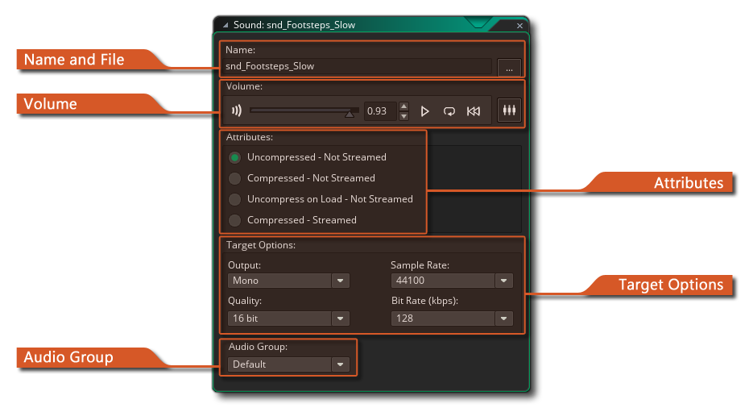

El editor de sonido es donde puede cargar sonidos en un nuevo recurso de audio y establecer sus propiedades. Para cargar un sonido, presione el botón Cargar sonido a la derecha del nombre del sonido. Aparece un diálogo selector de archivos en el que puede seleccionar el archivo de sonido. Esto puede ser un WAV, un MP3 archivo o una OGG archivo. En general *.wav se usan para los efectos de sonido cortos ya que aunque generalmente son archivos más grandes, se reproducirán instantáneamente debido a que no necesitan ningún tipo de decodificación para la reproducción. *.mp3 o *.ogg los archivos de formato se deben usar para música de fondo o para efectos de sonido de mayor o mayor tamaño. Estos archivos son mucho más pequeños que un archivo de onda, pero tienen una pequeña sobrecarga de CPU ya que deben decodificarse antes de reproducirse.
Una vez que haya cargado su archivo, puede obtener una vista previa del sonido utilizando el botón de reproducción que lo repetirá continuamente. Esto es muy útil ya que significa que puede hacer cambios en el volumen usando el control deslizante en la parte inferior de la ventana y escuchar el efecto que tendrá en el sonido. También hay un botón de detención, por lo que puede detener la vista previa en cualquier momento.
La ventana de sonido también tiene otras opciones que se explican a continuación.
Aquí puede hacer clic en el botón "abrir" para abrir el explorador de archivos y elegir un archivo de audio para cargar. También puede establecer el nombre del nuevo recurso del campo "Nombre" a la izquierda. Los nombres solo pueden ser alfanuméricos y solo pueden usar el símbolo "_" de la barra inferior, y no pueden comenzar con un número.
Esta sección es para configurar los atributos de sonido. Estos son los atributos que se establecerán cuando exporte su juego y afectarán la forma en que se reprodujo la id. De sonido en tiempo de ejecución. Para efectos de sonido ( WAV formato) querrá que estén sin comprimir para que se reproduzcan rápidamente y no requieran decodificación, sin embargo, para OGG y MP3 por lo general, querría una de las otras tres opciones disponibles.
El audio comprimido forzará todos sus archivos de sonido (independientemente de si son *.wav o *.mp3 o *.ogg ) para ser comprimido a Ogg Vorbis *.ogg archivos de formato para todas las plataformas. Estos sonidos son más pequeños en el disco, pero tendrán una ligera sobrecarga de CPU debido a la necesidad de descomprimirlos y cargarlos en la memoria antes de reproducirlos, por lo que debes tener esto en cuenta si deseas usar la compresión en un juego que ya utiliza la CPU.
Puede mitigar un poco esta sobrecarga de CPU al elegir descomprimir durante la carga, lo que colocará todos los sonidos en la memoria del dispositivo para una reproducción más rápida, a expensas de un mayor uso de la memoria.
Si ha elegido audio comprimido, también puede elegir que su sonido se transmita desde el disco también. Un sonido transmitido será uno que se descomprime y se reproduce en tiempo real, transmitido desde el disco en lugar de cargado en la memoria. El streaming es ideal para la música ya que reduce la carga única de descomprimir todo el archivo, lo que puede causar una pausa en el juego, pero no se recomienda para efectos de sonido simples donde el golpe en la CPU es mucho menor.
Aquí puede establecer el volumen de reproducción para el sonido dado. Este es el volumen absoluto, donde si el control deslizante está en el medio, por ejemplo, entonces el volumen máximo para ese sonido cuando la ganancia es 1, será la mitad del volumen grabado para el sonido. Además de los controles de volumen, también tiene los controles de reproducción, donde puede obtener una vista previa del sonido, configurarlo en loop o rebobinar. También puede hacer clic en
Ícono para abrir el sonido en el Mezclador de sonido (consulte la sección sobre Mezcla de sonidos para obtener más información).
El panel de opciones de destino es donde configura las tasas de conversión para su juego. Estas configuraciones afectarán la forma en que se exporta el sonido para la plataforma de destino, y GameMaker Studio 2 convertirá automáticamente sus archivos de sonido: usted simplemente controla la calidad final de esos sonidos cuando se convierten. En general, las configuraciones predeterminadas de 16 bits, 44100kHz y 192kbps son perfectamente adecuadas, pero es posible que desee que los efectos de sonido (por ejemplo) tengan una calidad inferior y música para tener una calidad superior, en cuyo caso se pueden cambiar estos ajustes.
También puede elegir si la conversión debe ser mono, estéreo o 3D. Si planea usar las funciones del emisor de audio para crear efectos de sonido 3D, debe indicarlo aquí; de lo contrario, elija mono o estéreo según el uso que se le dé a los sonidos. Si elige usar el sonido para audio 3D, se exportará como sonido mono.
NOTA: Cuanto mayor sea la calidad, mayor será el tamaño del archivo, y esto debe tenerse en cuenta a la hora de decidir qué tasa de bits elegir.
Puede asignar su archivo de audio a un grupo de Audio específico. Estos se crean a partir de la ventana Grupos de audio y se usan para agrupar activos de audio para facilitar la administración de la memoria y el control del volumen. Una vez que se ha asignado un archivo de audio a un grupo, puede usar las funciones específicas del grupo de audio para cambiarlas y cargarlas / descargarlas de la memoria. Consulte la sección de referencia sobre Funciones de audio para obtener más información. Tenga en cuenta que, si bien el resto de las propiedades de audio son específicas de la configuración, la configuración del grupo de audio no lo es y un sonido pertenecerá al mismo grupo en todas las configuraciones que utilice.
Tenga en cuenta que, aparte de estas opciones para sonidos individuales, también puede previsualizar y mezclar sonidos utilizando el Mezclador de sonido dedicado.